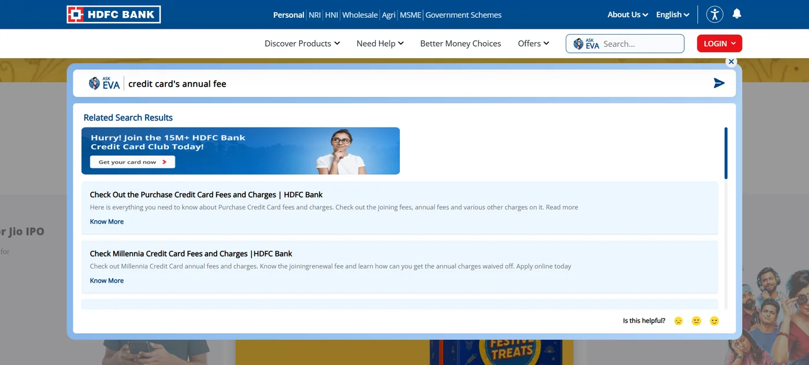
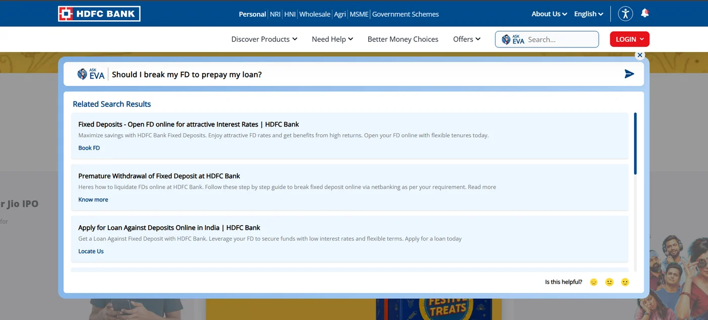
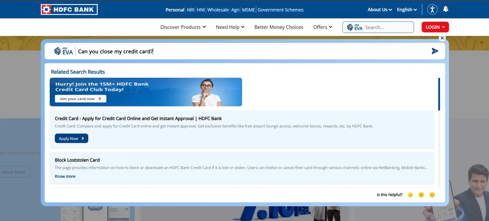
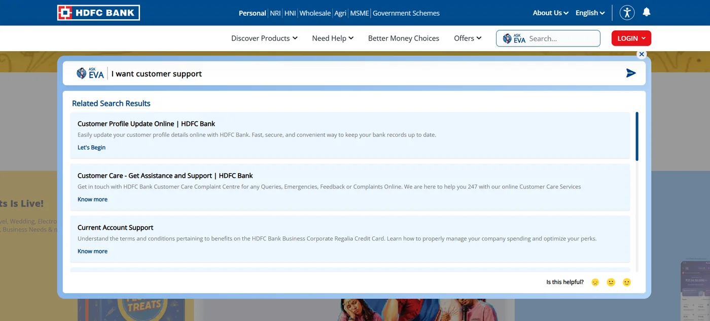

Teardown · AI in regulated banking
Erica vs. EVA — two very different answers to AI in a regulated bank
Bank of America's Erica is the most widely adopted AI assistant in banking. HDFC Bank's EVA was one of India's first. Using EVA today shows how differently two banks have put "AI" in front of customers — measured against what their regulators now expect.
How this teardown was done
- Erica — public evidence only. I don't hold a Bank of America account, so everything about Erica comes from the bank's own published figures and product descriptions, and from the U.S. regulator's review of bank chatbots. Where I infer something, I say so.
- EVA — hands-on, on HDFC Bank's public website in October 2026. No login was involved, so the screenshots contain no personal data.
- Sources are listed at the end of the page.
Why these two
Erica launched in 2018. Bank of America reports that it has passed 3 billion client interactions, has assisted nearly 50 million users, averages more than 58 million interactions a month, and has delivered more than 1.7 billion proactive, personalised insights. The bank also reports that more than 98% of users find the information they need.
EVA ("Electronic Virtual Assistant") launched in March 2017, built with Senseforth. At launch it was configured to answer questions across more than 7,500 FAQs, and it handled 2.7 million customer queries in its first six months.
What makes the pair interesting isn't the technology. It's that both answer to regulators who have now said, in writing, what they expect from AI in customer service — and those expectations are where the real design decisions sit.
What the regulators expect
- United States — CFPB, Chatbots in Consumer Finance (June 2023). All ten of the largest U.S. commercial banks use chatbots, and roughly 37% of the U.S. population was estimated to have interacted with one in 2022. The risks it names: incorrect answers, noncompliance with consumer-protection law, privacy and security gaps, and "doom loops" where a customer can't get past the bot to a person.
- India — RBI, FREE-AI framework (August 2025). Seven principles and 26 recommendations for responsible AI in financial services. For customer-facing AI: disclose the use, limitations and risks of AI; make sure customers know when they are dealing with an AI system; and let them contest an AI-driven decision.
Put together, that gives three questions any bank's assistant has to answer well.
The three design questions
Erica, through the three questions
Based on Bank of America's published descriptions; these are informed readings, not hands-on findings.
1. Information or advice. Bank of America describes Erica as "providing guidance on nearly 50 investment-related topics". The careful choice of "guidance" rather than "advice" is itself the point: Erica operates right on the line Question 1 is about. From the outside, the product question is whether the interface marks the difference between describing a customer's money and recommending what to do with it, or leaves it to wording like that.
2. Nudges. With more than 1.7 billion proactive insights delivered, Erica's proactive layer is a channel in its own right, alongside the bank's existing alert rails. The question is whether an observation about spending and a possible duplicate charge feel like different categories of message — they should.
3. The way out. Erica can schedule an appointment with a banker, which is a real escape hatch. The CFPB's "doom loop" finding is the reason to measure the other path too: how quickly a customer who needs a person now gets one, with context carried over.
EVA, hands-on
First finding: where EVA lives. Looking for EVA in my HDFC Bank mobile app, I couldn't find it. The bank's own page places EVA on its website, outside the logged-in app. That is a real design difference from Erica, which sits inside Bank of America's app, where customers actually manage their money: EVA answers questions about products, while Erica works alongside the customer's own accounts.
Second finding: EVA is now a search box, not a conversation. On the website, EVA sits in the header as "Ask EVA — Search…". Every question I asked returned a list of Related Search Results — links to product and help pages — rather than an answer. EVA launched in 2017 as a chatbot that answered in plain language; on the website today it behaves as an AI-branded site search.
I ran four checks.
1. A factual question: "credit card's annual fee"

The first result is a promotion — "Join the 15M+ HDFC Bank Credit Card Club… Get your card now" — followed by fee pages for individual cards. No direct answer; the customer has to work out which card page applies to them.
2. An advice-shaped question: "Should I break my FD to prepay my loan?"

Links to open a fixed deposit, to withdraw one early, and to take a loan against deposits. EVA neither advises nor says that it can't advise. That keeps the bank clear of Question 1's advice line — but the customer gets no help deciding, and no pointer to someone who could help. The loan-against-deposit link is a genuinely relevant alternative, offered as a product rather than as an explanation.
3. A request to leave: "Can you close my credit card?"

The top answers to a closure request are a sign-up banner and "Apply for Credit Card", then "Block lost/stolen card". The search matched the words "credit card", not the intent. The CFPB names incorrect answers as a core chatbot risk; answering "I want to leave" with "sign up" is the kind that costs trust.
4. A way out: "I want customer support"

A profile-update page, a link to the Customer Care page, and a result titled "Current Account Support" whose description is about a business credit card. There is no direct handoff to a person or a live chat; the way out is a link to another page.
Disclosure. Nothing in the panel says what EVA is or what it can't do — just the "Ask EVA" label and an "Is this helpful?" rating. If EVA is search, the "EVA" persona promises more than it delivers; if it is an assistant, the RBI's expectation that customers know they are dealing with AI, and its limits, applies.
| Erica (public evidence) | EVA (hands-on) | |
|---|---|---|
| Where it lives | Inside the logged-in app, next to the customer's accounts | The public website's search bar; not found in the app |
| What it does | Conversational answers, proactive insights, banker appointments | Returns lists of related pages |
| Q1 · Advice | "Guidance" on ~50 investment topics — right on the line | Avoids the line by not answering at all |
| Q2 · Nudges | 1.7B+ proactive insights — a channel of its own | None — no access to accounts on the website |
| Q3 · Way out | Schedules a banker appointment | A link to the Customer Care page |
What I'd change
For Question 1: a persistent, subtle marker distinguishing "here's what I found" from "here's what I'd suggest" — the same discipline a compliance-reviewed human adviser's script already follows, made visible in the interface rather than left to phrasing.
For Question 2: one notification taxonomy, so AI-generated insights inherit the same urgency and channel rules as existing alert types instead of running as a parallel system. That is an architecture decision as much as a UX one.
For Question 3: a standing "talk to a person" option in every conversation, not buried in a menu, with the conversation so far handed over automatically so the customer never repeats themselves. It answers the CFPB's doom-loop concern and the RBI's right-to-contest expectation with the same feature.
For EVA specifically — three low-cost fixes, all from what I saw:
- Detect intent before matching keywords. "Close my card", "block my card" and "get a card" share words but not intent. A small intent layer in front of the search would route a closure request to the closure process, not to a sign-up banner.
- No promotions on service intents. When the intent is a fee, a closure or a complaint, suppress the marketing banner. Cross-selling to someone trying to leave costs more trust than it earns.
- Say what EVA is, and offer a person. One line under the search box — what EVA can and can't do — plus a standing "talk to us" link that opens chat or a call-back, not another page.
How I'd validate it
A moderated usability study with 8–10 users across a spread of financial literacy levels, showing both response types (informational and advice-adjacent) with and without the proposed marker, then asking users to categorise what they just received. Correct-categorisation rate is the primary signal, before touching any production metric. Compliance and legal would co-review the marker language before any live test, given the regulatory sensitivity.
Hypothesised success metric (a hypothesis — I have no access to either bank's data): fewer users abandoning the assistant after one ambiguous answer, and a downward trend in complaints tagged to unclear or misleading AI responses.
Sources
- Bank of America newsroom, "A Decade of AI Innovation: BofA's Virtual Assistant Erica Surpasses 3 Billion Client Interactions", August 2025
- Consumer Financial Protection Bureau, Chatbots in Consumer Finance, issue spotlight, June 2023
- Reserve Bank of India, Framework for Responsible and Ethical Enablement of AI (FREE-AI), August 2025
- HDFC Bank, EVA chatbot (where EVA is offered)
- FinTech Futures, "HDFC Bank launches AI-powered virtual assistant Eva", March 2017
- Analytics India Magazine, "HDFC Bank's EVA becomes India's largest, smartest chatbot", 2017